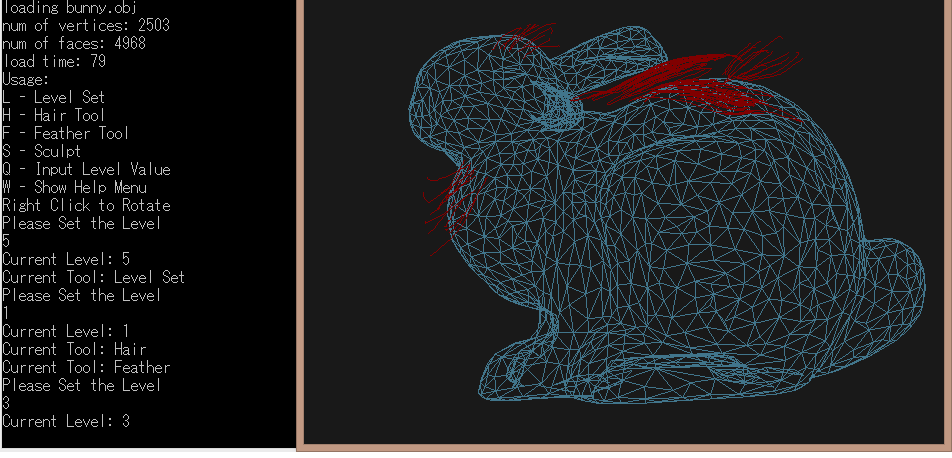
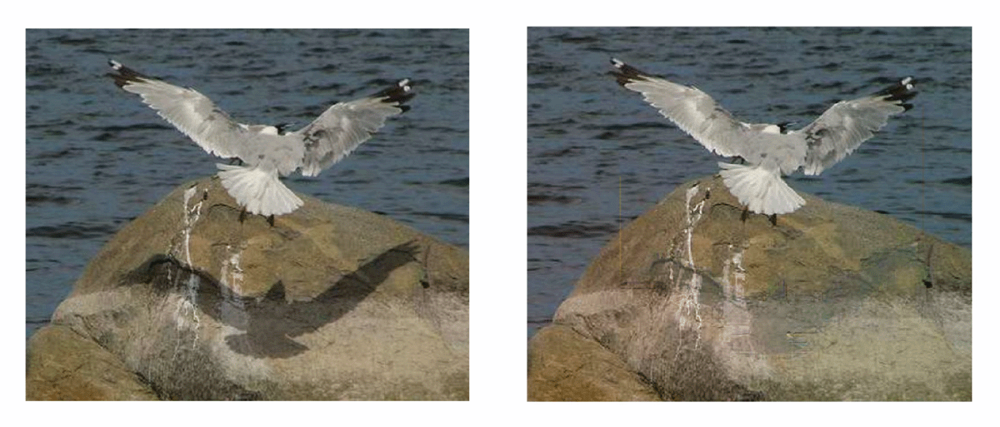

Animated Poseur
Animated Poseur
Animated Poseur is a frame animation-focused drawing application. It's currently an on-going project,
though it started off as my senior thesis. Currently it has simple drawing functions that include brush,
rectangular selection, eraser, fill, and shapes, but has an animation state and frame management system
as well as layers. Animated Poseur offers a .png + JSON sprite sheet export support.
Animated Poseur is currently built on the AngularJS framework on the front end and JavaEE back end on
Google App Engine. However, future plans for the app include migrating it to Angular 2+, with a Spring Boot back
end.
 Piggy Bank Polymer Components
Piggy Bank Polymer Components
This is an example of a resource management tool we began to build.
It leveraged an existing time tracking solution that we implemented previously to
pull in the hours recorded by each resource. It was our intent to perform some
calculations with the data collected by PiggyBank and the other platform to enable financial
reports to be created. The reports would have included organizational
performance against quarterly and annual budget targets, as well as resource utilization metrics.
PiggyBank is built using the Google Polymer framework. The charts were built using D3.js.

OverCoat: An Implicit Canvas for 3D Painting
For a graphics course in grad school I implemented a part of
this paper. I was a bit short on time given the circumstances
of the semester, but I was able to get a lot of the core functionality working. Overall a cool project.
Written in C++ using the OpenGL library, which I was not familiar with at the time. Definitely a learning experience.

Texture-Consistent Shadow Removal
An implementation of this paper
for my graduate computer vision course, although somewhat limited due to time constraints. Using the methodology
detailed in the paper (full pdf report on what I did in Github) I was able to mostly achieve texture-consistent shadow
removal.
Written in Matlab. Very much not for production use.